Use Case
AWS allows to give the permissions to users using RBAC (Role Based Access Control) and ABAC (Access Based Access Control). As the organizations use more and more of AWS and as the number of users increase in an organization, AWS recommends to use ABAC instead of RBAC. With RBAC the number of the IAM policies increase “exponentially” and also does the complexity of the IAM policies. With the ABAC the number and the complexity of the IAM policies grow in a “linear” fashion.
More about RBAC and ABAC.
https://docs.aws.amazon.com/IAM/latest/UserGuide/introduction_attribute-based-access-control.html
As per the AWS documentation in the Well Architected Framework:
AWS enables you to grant permissions based on attributes. In AWS, these are called tags. Tags can be attached to IAM principals (users or roles) and to AWS resources. Using IAM policies, administrators can create a reusable policy that applies permissions based on the attributes of the IAM principal.
In the below diagram a user with tags ‘Proj=CRM’/‘Env=Prod’ would be able to manage (stop/start) RDS instances with the same tag and do nothing else. In the last row a new RDS has been added with the tags ‘Proj=Sales’/‘Env=Dev’ and automatically the user with the same tag would be automatically getting the permissions for this RDS.
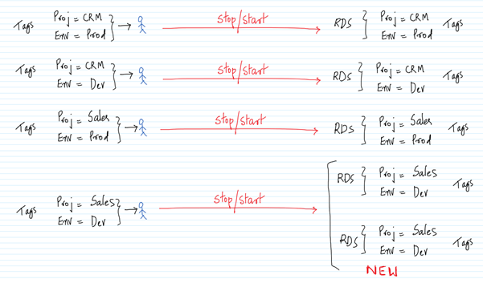
The same can be done via both RBAC and ABAC. But, as mentioned above using RBAC makes it complex as the organization and the usage of AWS grows within it. ABAC makes it easy.
AWS Services: AWS Well Architected Framework, RDS, IAM
-- Go to the IAM Management Console and to the Policies tab. Click on `Create policy`.
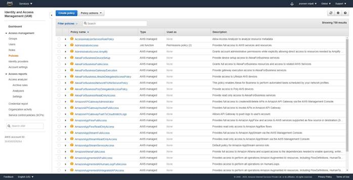
-- Click on the JSON tab and enter the below JSON. Make sure to replace the highlighted section with the AWS Account it. Click on `Create Policy`.
{
"Version": "2012-10-17",
"Statement": [
{
"Sid": "AssumeRoleDemo",
"Effect": "Allow",
"Action": "sts:AssumeRole",
"Resource": "arn:aws:iam::304000509264:role/access-*",
"Condition": {
"StringEquals": {
"iam:ResourceTag/access-project": "${aws:PrincipalTag/access-project}",
"iam:ResourceTag/access-team": "${aws:PrincipalTag/access-team}"
}
}
}
]
}
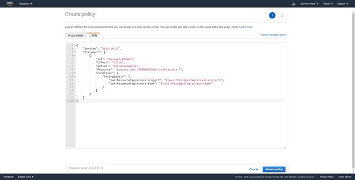
-- Give the policy the `access-assume-role` name and click on `Create policy`.
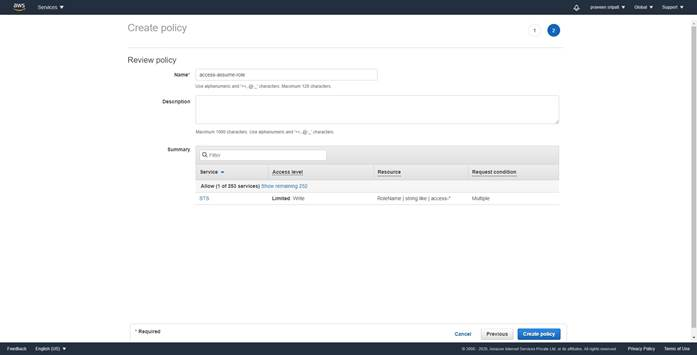
-- Click on the Users tab. Click on `Add user`.
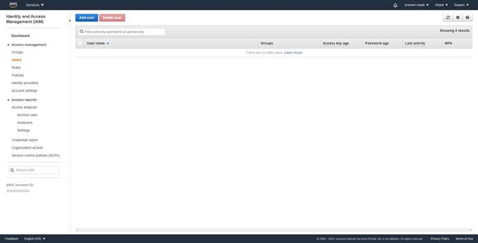
-- Specify the `User name` as `access-praveen-crm-prod`. Select `AWS Management
Console access`. Select `Custom password`, enter a password and unselect
`Request password reset`. Click on `Next: Permissions`.
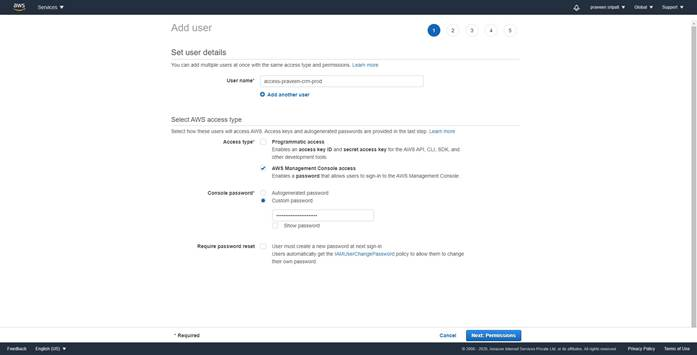
-- Select `Attach existing policies directly` and select the policy created in the previous step. Click on `Next: Tags`.
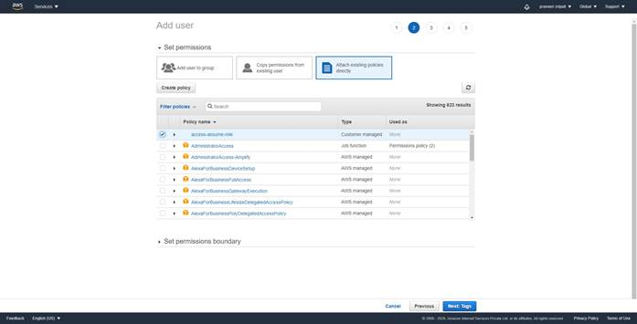
-- Enter the below tags and click on `Next: Review`.
access-project = crm
access-team = prod
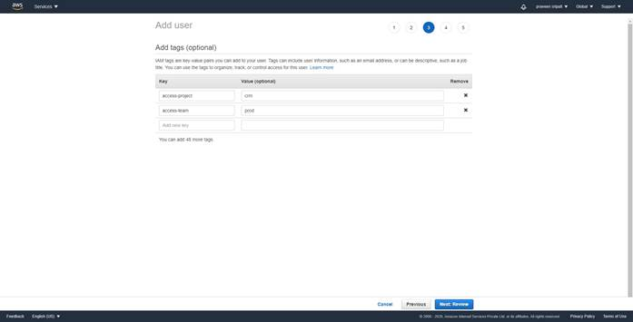
-- Review the details and click on `Create user`.
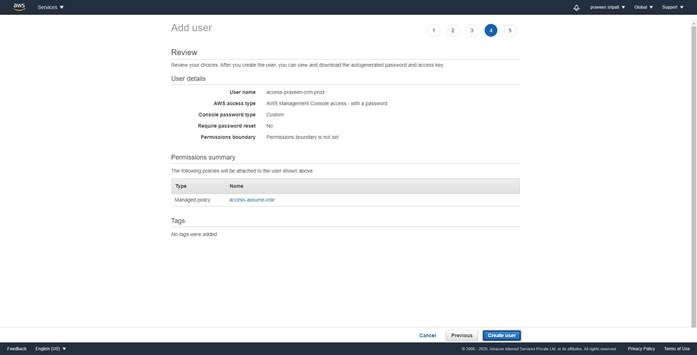
-- When an IAM User is created, note down the URL. The same URL would be used to login as an IAM User.
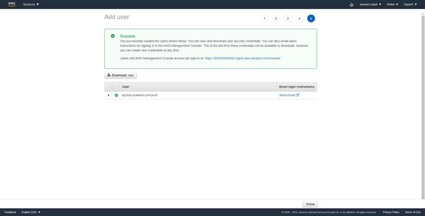
-- Along the same user create another user with the below details. Rest of the options are all the same.
User Name
access-sam-crm-dev
Tags
access-project = crm
access-team = dev
-- Click on the Policies tab. Click on `Create policy`.
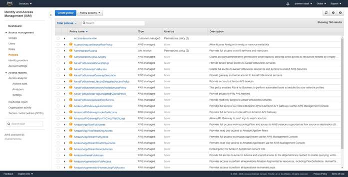
-- Click on the JSON tab and enter the below policy. There is no need to change the JSON. Click on `Review policy`.
{
"Version": "2012-10-17",
"Statement": [
{
"Sid": "AllowStartStopWithAppropriateTags",
"Effect": "Allow",
"Action": [
"rds:StopDBInstance",
"rds:StartDBInstance"
],
"Resource": "*",
"Condition": {
"StringEquals": {
"rds:db-tag/access-project": [
"${aws:PrincipalTag/access-project}"
],
"rds:db-tag/access-team": [
"${aws:PrincipalTag/access-team}"
]
}
}
},
{
"Effect": "Allow",
"Action": [
"rds:Describe*",
"rds:List*"
],
"Resource": [
"*"
]
}
]
}
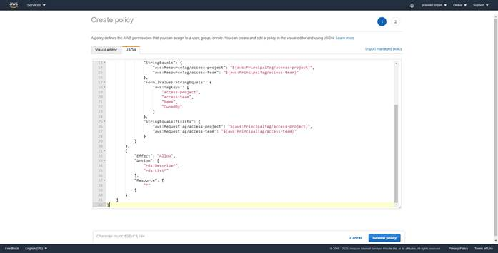
-- Enter the policy name as `access-same-project-team` and click on `Create policy`.
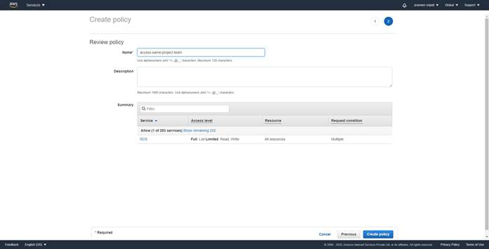
-- Click on the Roles tab. Click on `Create role`.
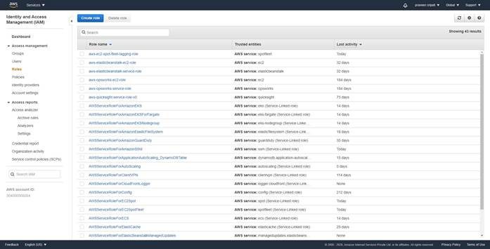
-- Select `Another AWS account` and enter the AWS Account ID. Click on `Next: Permissions`.
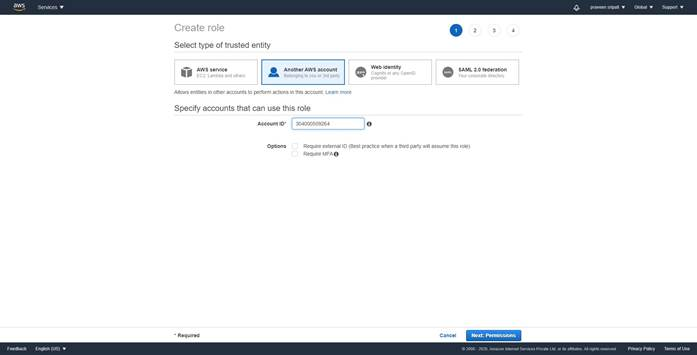
-- Select the `access-same-project-team` policy. Click on `Next: Tags`.
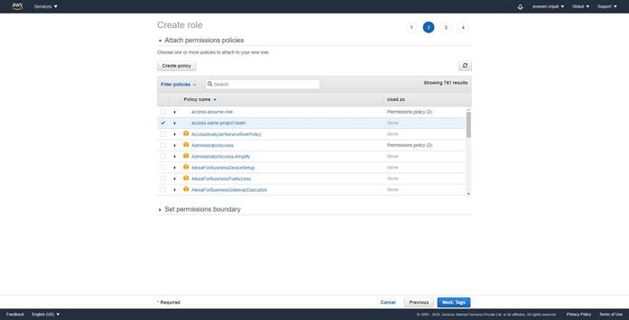
-- Add the below tags and click on `Next: Review`.
access-project = crm
access-team = prod
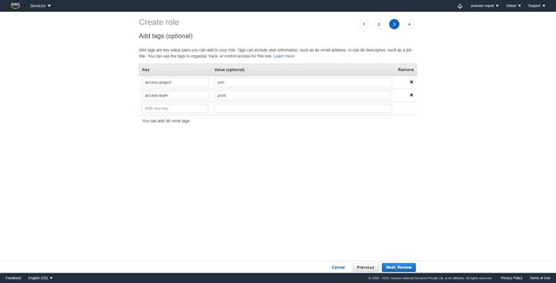
-- Give the Role the `access-crm-prod` name and click on `Create role`.
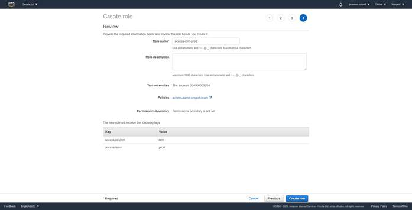
-- Along the same lines create another Role with the name `access-crm-dev` and the below Tags.
access-project = crm
access-team = dev
-- Navigate to the RDS Management Console and click on `Create database`.
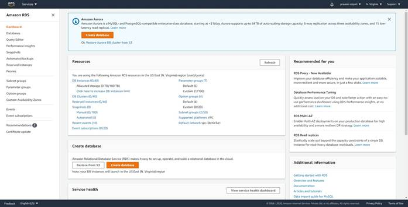
-- Select `Standard create`. Select MySQL.
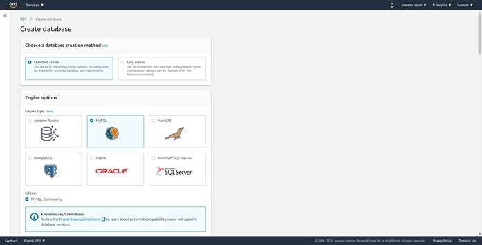
-- Select `Free tier`. For the `DB instance identifier` enter `prod-db`. Enter the username as admin and the password twice.
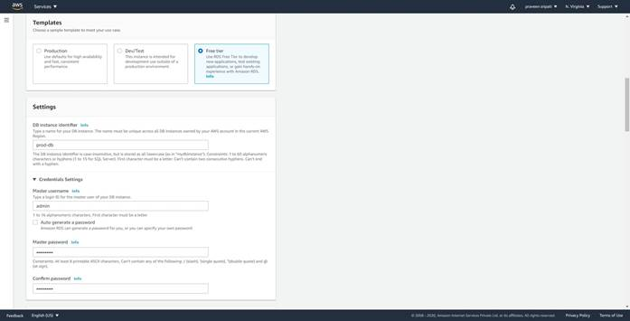
-- Uncheck `Enable storage autoscaling`.
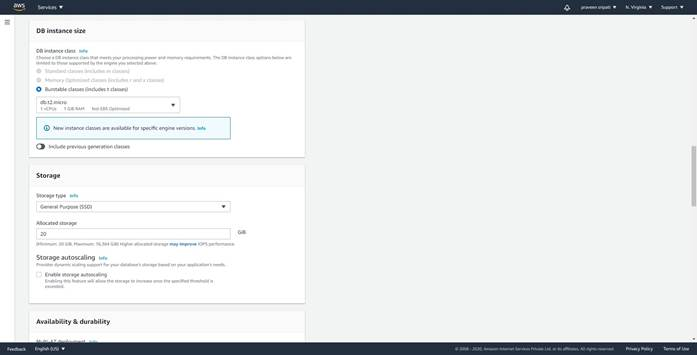
-- Under `Additional configurations`, uncheck `Enable automatic backups`.
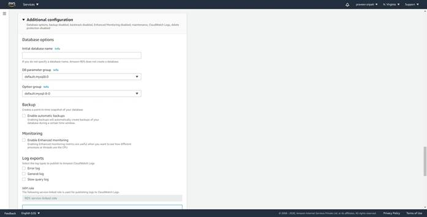
-- Click on `Create database`.
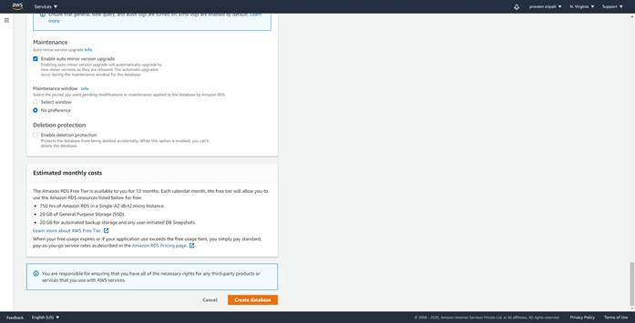
-- Initially the database would be in a `creating` Status. Click on the database name `prod-db`.
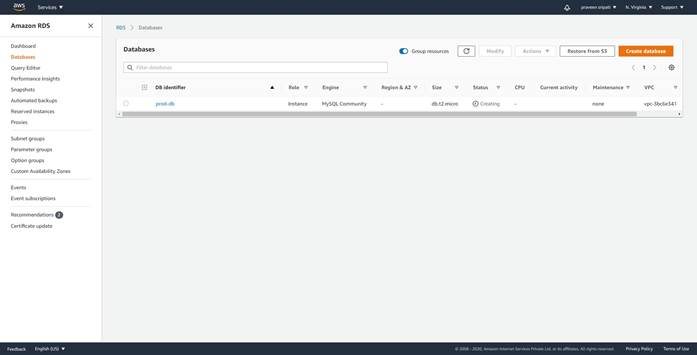
-- Go to the Tags tab and add the below tab.
access-project = crm
access-team = prod
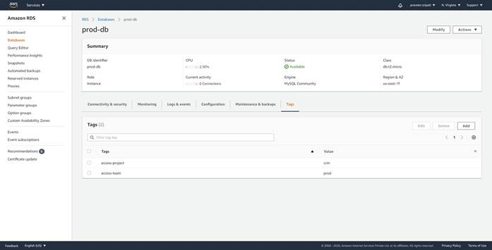
-- Like wise create another database with the below tags and give the database identifier as `dev-db`.
access-project = crm
access-team = dev
-- At the end two databases should created as shown below.
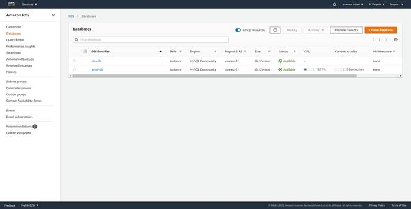
-- Login as the IAM User `access-praveen-crm-prod` using the URL got while creating the IAM user.
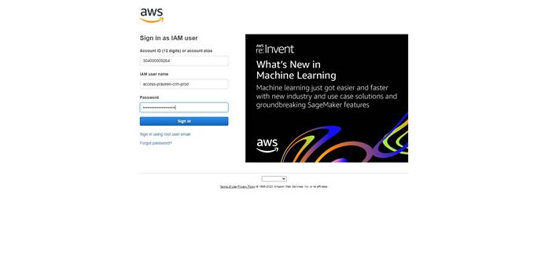
-- Click on the name on the top-right and then on `Switch Roles`.
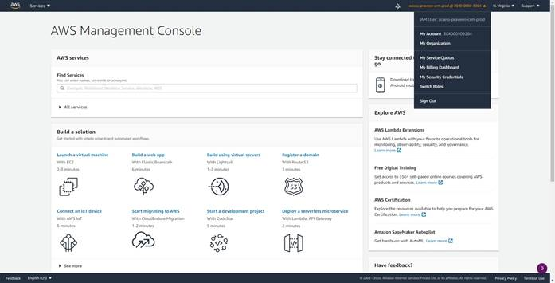
-- Click on `Switch Role`.
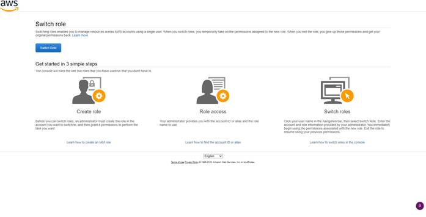
-- Enter the account number and the Role as `access-crm-prod`. Click on `Switch Role`.
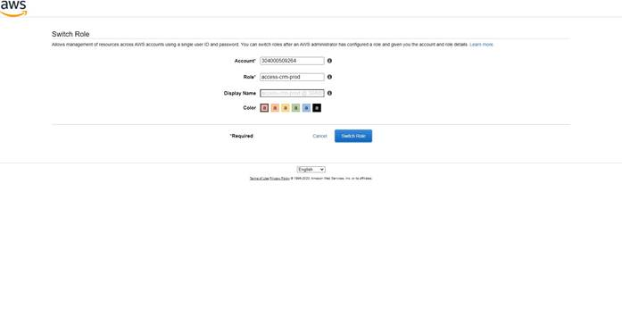
-- The Role of the user has changed. The same can be observed on the top-right as highlighted below.

-- Navigate to the RDS Management Console. Click on Databases tab.
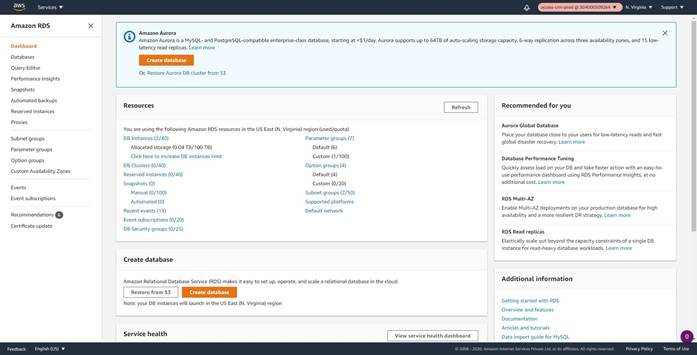
-- Since the user has been given the Describe privileges, they should be able to view both the databases.
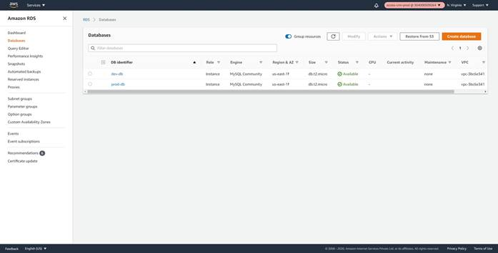
-- Select the `dev-db` as shown below and try to stop it.
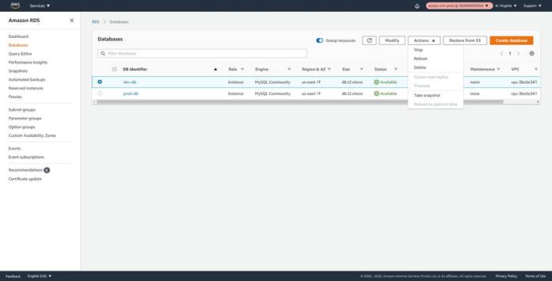
-- An error should be shown as below, because the user has no permissions to stop the dev databases.
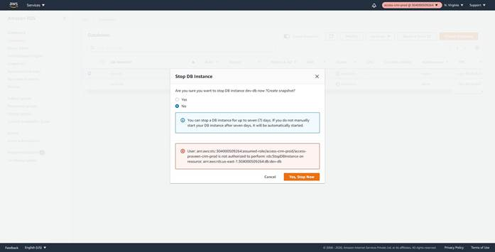
-- Try to stop the prod-db and the user should be able to.
-- Logout and login back as `access-sam-crm-dev` user. Change to the `access-crm-dev`. The user should be able to stop/start the dev-db and nothing else.
-- As the AWS administrator add another database and tag it as below. The same should be visible to the `access-praveen-crm-prod` user immediately. There is no need to make any changes to the IAM policies. As long as the Tags match, the user should be able to stop/start the databases.
access-project
= crm
access-team = prod
Conclusion
As the organizations grow with more users/applications/projects the IAM policies becomes more and more complex. With the ABAC, the policies remain more or less the same and so easy to manage.
As long as the user tags and the resources tags match the user should be able to manage the resources. Due to this feature AWS recommends to use ABAC.
https://docs.aws.amazon.com/IAM/latest/UserGuide/introduction_attribute-based-access-control.html